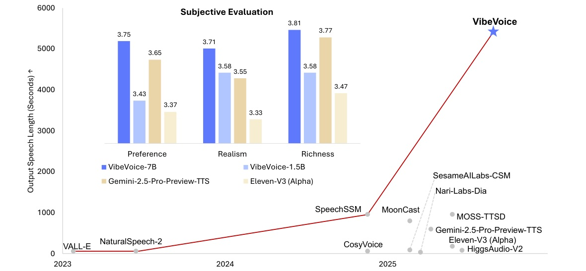
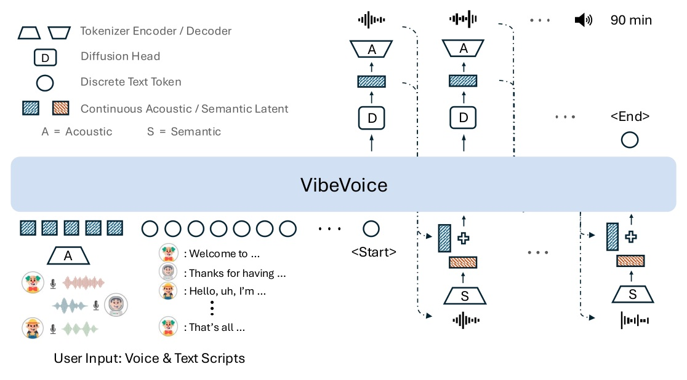

論文：VibeVoice Technical Report（arXiv 2508.19205v1）· ICLR 2026 版標題 VibeVoice: Expressive Podcast Generation with Next-Token Diffusion（OpenReview FihSkzyxdv）· github.com/microsoft/VibeVoice
把 24 kHz 語音壓到 每秒 7.5 個連續 latent（3200×），讓 90 分鐘音訊塞進 64K context；再用 Qwen2.5 當骨幹、每個 token 接一個小 diffusion head 生 latent。7B 版在 1 小時 podcast 測試上主觀 MOS 平均 3.76，高於 Gemini 2.5 Pro preview TTS 的 3.66 與 ElevenLabs v3 alpha 的 3.40。
傳統做法：逐句合成再串接
近期多說話者長對話模型


Encoder 結構
Token rate 換算
直覺：acoustic latent 負責「聽起來像誰、音質如何」，semantic latent 負責「剛剛說了什麼」，回饋時兩者相加給 LLM。
模型
長度課程
報告沒有揭露訓練資料量、資料來源與訓練算力；ICLR 版是否補充無法確認（OpenReview 403）。
| Model | Realism | Richness | Pref. | Avg | WER (Whisper) | WER (Nemo) | SIM |
|---|---|---|---|---|---|---|---|
| Nari Labs Dia | – | – | – | – | 11.96 | 10.79 | 0.541 |
| MoonCast | – | – | – | – | 2.81 | 3.29 | 0.562 |
| Sesame CSM | 2.89 | 3.03 | 2.75 | 2.89 | 2.66 | 3.05 | 0.685 |
| Higgs Audio V2 | 2.95 | 3.19 | 2.83 | 2.99 | 5.94 | 5.97 | 0.543 |
| ElevenLabs v3 α | 3.34 | 3.48 | 3.38 | 3.40 | 2.39 | 2.47 | 0.623 |
| Gemini 2.5 Pro TTS | 3.55 | 3.78 | 3.65 | 3.66 | 1.73 | 2.43 | – |
| VibeVoice-1.5B | 3.59 | 3.59 | 3.44 | 3.54 | 1.11 | 1.82 | 0.548 |
| VibeVoice-7B | 3.71 | 3.81 | 3.75 | 3.76 | 1.29 | 1.95 | 0.692 |
主觀分數 ± 約 0.9–1.2（標準差），表中省略；WER 越低越好。
| Model | Frame rate | zh CER ↓ | zh SIM ↑ | en WER ↓ | en SIM ↑ |
|---|---|---|---|---|---|
| MaskGCT | 50 | 2.27 | 0.774 | 2.62 | 0.714 |
| Seed-TTS | – | 1.12 | 0.796 | 2.25 | 0.762 |
| FireRedTTS | 25 | 1.51 | 0.635 | 3.82 | 0.460 |
| CosyVoice 2 | 25 | 1.45 | 0.748 | 2.57 | 0.652 |
| Spark TTS | 50 | 1.20 | 0.672 | 1.98 | 0.584 |
| VibeVoice-1.5B | 7.5 | 1.16 | 0.744 | 3.04 | 0.689 |
| Tokenizer | Nq | Tok/s | clean PESQ | clean STOI | clean UTMOS | other PESQ | other UTMOS |
|---|---|---|---|---|---|---|---|
| Ground truth | – | – | – | – | 4.056 | – | 3.483 |
| Encodec | 8 | 600 | 2.72 | 0.939 | 3.04 | 2.682 | 2.657 |
| DAC | 4 | 400 | 2.738 | 0.928 | 3.433 | 2.595 | 2.945 |
| SpeechTokenizer | 4 | 300 | 1.931 | 0.878 | 3.563 | 1.737 | 3.018 |
| WavTokenizer | 1 | 75 | 2.373 | 0.914 | 4.049 | 2.261 | 3.431 |
| WavTokenizer | 1 | 40 | 1.703 | 0.862 | 3.602 | 1.662 | 3.055 |
| DAC | 1 | 100 | 1.246 | 0.771 | 1.494 | 1.245 | 1.499 |
| Ours (Acoustic) | 1 | 7.5 | 3.068 | 0.828 | 4.181 | 2.848 | 3.724 |
Nq 對本方法指 VAE（連續、無量化）。STOI 0.828 並非最佳（Encodec 8q 0.939）；UTMOS 4.181 甚至高於 ground truth 的 4.056。
長篇語音的瓶頸不是生成品質，而是序列長度。VibeVoice 先用 7.5 Hz 連續 latent 把序列縮短到 LLM 吃得下，再讓 diffusion head 補回量化會丟掉的細節。
作者自述（§4）
報告層缺口
we have pioneered the development of a causal speech tokenizer that achieves a 3200× compression rate (i.e., 7.5 Hz frame rate).
我們率先開發出一個 causal speech tokenizer，達到 3200 倍壓縮率（即 7.5 Hz frame rate）。§1, p.2
Notably, variance σ is a pre-defined distribution (N(0, Cσ)) in σ-VAE, rather than a learnable distribution in VAE.
值得注意的是，σ-VAE 中的方差 σ 是預先給定的分布 N(0, Cσ)，而不是一般 VAE 裡可學習的分布。§2.1, p.3
During VibeVoice training, the pre-trained acoustic and semantic tokenizers remained frozen, with only the LLM and diffusion head parameters being learnable.
訓練 VibeVoice 時，預訓練好的 acoustic 與 semantic tokenizer 保持凍結，只有 LLM 與 diffusion head 的參數會更新。§2.2, p.3
our acoustic tokenizer, uniquely operating at an ultra-low 7.5 Hz, achieves leading PESQ and UTMOS scores on both test-clean and test-other.
我們的 acoustic tokenizer 是唯一以超低 7.5 Hz 運作者，並在 test-clean 與 test-other 都取得領先的 PESQ 與 UTMOS。§3.3, p.5
| 項目 | 數值 | 出處 |
|---|---|---|
| 輸入取樣率 → frame rate | 24 kHz → 7.5 Hz（3200×） | §2.1 p.3 |
| Tokenizer encoder 結構 | 7 stages、6 downsampling、causal depth-wise conv | §2.1 p.3 |
| Tokenizer encoder / decoder 參數 | 各約 340M | §2.1 p.3 |
| speech : text token 比 | 約 2 : 1 | §1 p.2 |
| LLM | Qwen2.5 1.5B / 7B | §2.2 p.3 |
| Diffusion head | 4 層；CFG 1.3；10 steps；DPM-Solver++ | §2.2 p.3 |
| Context 課程 | 4,096 → 65,536 tokens | §2.2 p.3 |
| 最長輸出 / 說話者 | 90 分鐘 / 4 人 | Abstract p.1 |
| Podcast 測試集 | 8 段 ≈ 1 小時；24 位標註者 | §3.1 p.4 |
來源：VibeVoice Technical Report · arXiv 2508.19205 · ICLR 2026 Oral · Microsoft Research